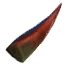
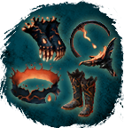
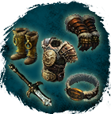
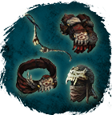
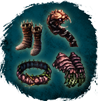
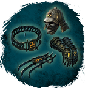
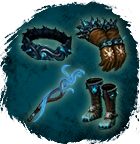

Открыть в интерактивной вики →
| Уровень | 75 |
|---|---|
| Сила (PvE) | 3646 |
| Аспект арены | Farao |
| Здоровье | 11 000 |
| Мана | 3000 |
| Выносливость | 3000 |
| Респаун | 35 минут - 47 минут |
Команда


Дроп
 (20-40)
(20-40) 

Шип хищного растения
Одеяния Жидкого Огня (Ом 50)
Рев Севера (Варвар 50)
Жало Богов (Лучник 50) Шторм Хагура (Рыцарь 50)
Шторм Хагура (Рыцарь 50) 
Появление Килларасуна (Вуду 50)
Острие Равновесия (Шид 50)
Гнев Стихий (Друид 50)

| Сеты | Синергетики | Эпики | |||
| Рев Севера Гнев Стихий Жало Богов Одеяния Жидкого Огня Шторм Хагура Острие Равновесия Появление Килларасуна | 20-40 ур. |  | |||
Прочее:  Шип хищного растения Шип хищного растения | |||||
Статистика

Уровень: 75
Здоровье: 9 800
Мана: 3 000
Выносливость: 3 000
Умения
| Болезненный Удар Удар Головой Кровотечение | Плевок | Ядовитый щит Корни Паника Рой ос Заражение Отравление |
Иммунитеты / особые умения
Устойчивость к обездвиживанию
Локация
Университетская Талия